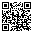
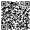
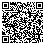
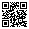
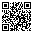

Leave with a playable spec.
A 2-hour workshop · NASA Space Apps Cairo 2026
Your host for the next 120 minutes
By the end, your team has a one-minute game spec ready to build.
Why games, not dashboards
The core loop
How winners did it
The 48-hour playbook
Live demo
You build a spec
Rules & questions
If the player has no meaningful choice, it's not a game.
It's just a chore.
You read it. Nothing you do changes anything.
Teaching numbers, not live data.
Each sol, the storm drains warmth and oxygen. Pick one move:
Every move answers back within a second.
Crash the habitat, press reset, try a smarter plan.
People remember what they chose, not what they scrolled past.
The player makes a choice.
The rules change the world's state.
The player sees what happened, at once.
…and the feedback sets up the next choice.
"Press Launch to launch the rocket."
There's only one sensible move, so there's nothing to decide.
"Launch now in bad weather, or wait a day and lose the orbital window?"
Both options cost something. That's a choice.
Same choice, same result, every time. No dice, no black-box AI.
If the player can't predict the rule, they can't plan, so they can't really choose.
Green is safe. Yellow is a warning. Red is trouble. No reading needed.
A beep on every change, an alarm before failure.
Show the exact change: "oxygen −20". Players learn the rules from it.
Drawn 6× steeper. Drag to turn.
Pick an angle and commit.
The rules will run here.
You'll see the outcome here.
Simplified corridor: −5.5° to −7.5°.
"Design a base that keeps a crew alive at the lunar south pole: power is limited during the long night, temperatures drop sharply, and oxygen must be produced on site."
Example written for this workshop.
Too shallow. There's nothing to trade off, so it's a quiz.
The sweet spot. Enough tension for real choices, small enough to finish in 48 hours.
Scope death. You'll spend Saturday balancing and ship nothing Sunday.
Get the heaviest satellite to orbit. Too little fuel: you fall back. Too much: stuck on the pad.
Ready?
Real rules, teaching numbers.
Datasets and papers. True, but no player can act on them.
Exact equations. The 48-hour trap: you'll debug maths all weekend.
The science simplified into clear states: safe, warning, critical. Build here.
Zumorroda-X

Scan to play their game, Henry's Farm AdventuresEgypt · 2025
Global winner, Art & Technology Award
Challenge: NASA Farm Navigators
Mini games where you play a farmer on a journey around the world, adapting to heat waves, flooding and other environmental challenges.
Put the player in someone's shoes. The data arrives as events they must react to.
Sources: NASA, 2025 Space Apps global winners announcement; the team's Space Apps project page.
TerraTales

Scan for their project, demo video and siteCairo, Egypt · 2024
Global winner, Best Storytelling Award
An interactive game that encourages players to make eco-friendly choices, showing the climate outcome of acting or not acting.
Let each choice show its consequence. The story is what the player caused.
Sources: NASA, 2024 global winners announcement; Universe Magazine; the team's Space Apps project page.
Eco-Metropolis

Scan for their project, demo video and codeTeam Innovisionaries
Sharjah, UAE · 2024
Global winner, Most Inspirational Award
A city-building game where players make urban-planning and resource-management decisions.
Scarce resources force real trade-offs. Give the player less than they want.
Sources: NASA, 2024 Space Apps global winners announcement; the team's Space Apps project page.
A platform to design and model a space habitat in 3D, then test it against space-weather threats like solar storms.
A simulation can be a test bench: build it, stress it, see what breaks.
Sources: NASA, 2025 Space Apps global winners announcement; the team's Space Apps project page.
Fun is the result, not an ingredient.
2 of 20
Global winners in 2024–2025 that were Egyptian game teams: TerraTales and Zumorroda-X.
2025's ten winners were picked from 18,860 teams. Source: NASA.
Next could be your team.
Instead: one screen, one loop, one finished level.
One rule: track your variables in one shared doc.
Every number and every rule, in one place the whole team can edit.
Check every number it gives you.
Claude Code, Cursor, Antigravity, Codex: it opens your project, runs the game, reads the error and fixes it. You still review every change it makes.
"Build one HTML file that runs offline. Use only the rules in my spec; ask before inventing numbers. One button per decision, green-yellow-red meters, show every change in numbers."
Never paste passwords, keys or personal details. Follow your event's AI rules and say what AI made.
Send 3 rock samples home before the dust storm hits.
Battery, dust on the solar panels, samples.
Drive, drill a rock, or spend a day cleaning the panels?
Meters repaint, dust piles up, the storm creeps closer.
Teaching numbers, not mission data.
Pick any NASA challenge. Your team writes one spec. Tonight, AI turns it into a playable draft.
20 min
Fill in the template on the next slide.
10 min
Trade specs with the next team. They play your rules on paper.
5 min
Fix the one rule they found confusing.
Keep the lunar crew alive through a 14-day night. One action per day.
Survive day 14 → crew survives.
20:00

marwan0.github.io
marwan_ayad@live.com
LinkedIn: in/marwan-ayyad
YouTube: @Marwan-Tech
Facebook: @marwan.ayyad.7
BLOOD TAX

Scan to watch how to playMera Mera Games
Built solo in Unity
Aiming for a Steam Next Fest demo
One mosquito against the humans.
Watch it, then tell me one thing you'd change.